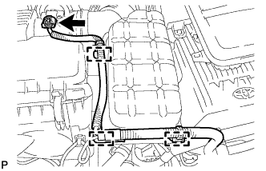
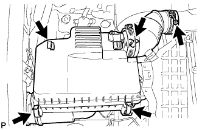
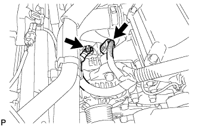
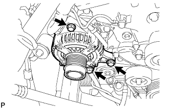

ГЕНЕРАТОР (для моделей с силой тока 100A) > СНЯТИЕ |
| 1. ОТСОЕДИНИТЕ ПРОВОД ОТ ОТРИЦАТЕЛЬНОГО ВЫВОДА АККУМУЛЯТОРНОЙ БАТАРЕИ |
| 2. СНИМИТЕ ВОЗДУШНЫЙ ФИЛЬТР И ШЛАНГ |
|  |
Открепите 3 зажима и отсоедините разъем датчика массового расхода воздуха.
|  |
Отцепите 4 зажима.
Ослабьте хомут шланга и снимите воздушный фильтр и шланг.
| 3. ПОЛИКЛИНОВОЙ РЕМЕНЬ ВЕНТИЛЯТОРА И ГЕНЕРАТОРА |
 |
С помощью шестигранника, указанного на рисунке стрелкой, сдвиньте шкив натяжителя вниз, уменьшив тем самым натяжение поликлинового ремня. Затем снимите поликлиновой ремень.
| 4. СНИМИТЕ ГЕНЕРАТОР В СБОРЕ |
|  |
Отсоедините разъем генератора.
Снимите заглушку контакта.
Отверните гайку и отсоедините жгут проводов от контакта B.
|  |
Отверните 3 болта и снимите генератор.